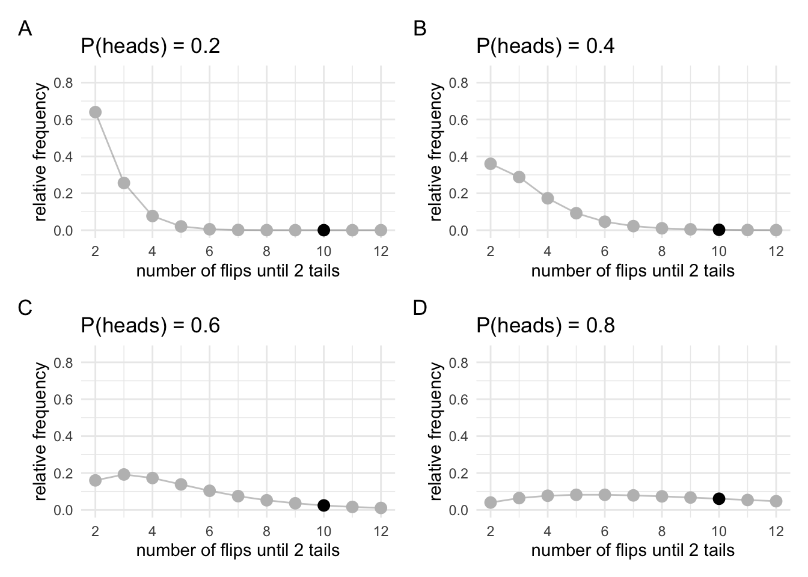

Chapter 3 The evidential alternative to p values

Coming up with an alternative to p values requires us to rearrange our thinking a bit. So lets first get straight what were doing with frequentist inference. In frequentist inference we set some parameter to a certain value (\(\theta\)), we then generate data from imaginary experiments using that parameter setting, and we then compare our data to the data from those experiments. We then ask the question: Given that parameter value, how surprising is our data? At no point are we making inferences about the value of \(\theta\). We set the value, and we ask a question about our data in relation to all the possible data that might be generated.
To think about what an alternative might look like, let us think back to our earlier example on the different meanings of probability. With p-values we thought about probability in terms of relative frequency. We were asking how often? questions. But I also mentioned another example. The example of being 90% sure that the accused committed a crime. If we want to be rational humans, when we make claims like this what we usually do is examine the evidence. We compare whether there is more evidence for the accuseds guilt or the accuseds innocence. That is, we take the courtroom evidence and examine whether it supports hypothesis 1 (the accused is guilty) or hypothesis 2 (the accused is innocent). To do this we balance of probabilities. Is is more probable that wed see this evidence if hypothesis 1 was true, or is it more probable that wed see this evidence if hypothesis 2 was true? (In a civil trial wed just weigh up the probabilities, but in a criminal trial wed have to also examine whether this difference in probabilities exceeds some threshold. Well leave this issue of thresholds for now). Might we be able to apply the same kind of thinking to statistical evidence?
To understand the concept of statistical evidence, lets go back to our coin flipping example. In our coin flipping example, we collected 10 flips and found 8 heads and 2 tails. Our frequentist analysis asked something like, is this data surprising?. But we could ask another question. That question might go something like this: Is it more likely that the bias is 0.6 or that the bias is 0.8 given that wed obtained 8 heads in 10 flips?
To try and answer this question, well again create some simulations. Well start by creating two sampling distributions. For now well keep things simple and well create these sampling distributions on the assumption that I intended to flip the coin 10 times. To create our sampling distributions well first set \(\theta\) to 0.6 and run the simulations, and then well set \(\theta\) to 0.8 and run the simulations. I know the distribution theyll follow, so Ill just compute the distributions directly rather than actually running the simulations.
We can draw the distributions of the possible data that would occur for different values of \(Pr_{\mathrm{heads}} = \theta\). In each of the plots, our actual observation will be highlighted. Although were simulating all possible observations, youll see that were only going to care about our actual observation. We will want to know the relative frequency with which that result occurs, not the frequency of results that didnt but mightve occurred. Im going to draw several distributions not just two that correspond to the values of \(\theta\) that were interested in.

Lets take these plots and create a new one out of them. Since were just interested in our specific observation well take all the marked points and put them on a plot of their own. Now well still have relative frequency on the y-axis, but on the x-axis we wont have the observation anymore (because were only focused on one specific outcome). Instead, well have \(\theta\) on the x-axis.

This new plot that were created illustrates whats know as the likelihood function. The likelihood function describes the relationship between values of the parameter and our data. Its made up of slices of the sampling distribution-the slices that correspond to our actual observation. Remember that when we were doing inference with the sampling distribution we were looking at the extreme tails of the sampling distribution. That is, we were interested in the entire shape of the sampling distribution. Now were instead only interested in the thin slice that corresponds to our observation.
3.1 Doing inference with likelihoods
The likelihood plays a key role in Bayesian inference. Inferences on the basis of likelihoods are derived from what is known at the law of likelihood. Simply stated, the law of likelihood says that for a given pair of hypothesesfor example, \(\mathcal{H}_1\) that the coin bias is \(Pr_\mathrm{heads}=0.6\) and \(\mathcal{H}_2\) that the coin bias is \(Pr_\mathrm{heads}=0.8\)then data support \(\mathcal{H}_1\) over \(\mathcal{H}_2\) if the likelihood of \(\mathcal{H}_1\) exceeds that of \(\mathcal{H}_2\). Or, put another way, if our data would be produced more often if \(\mathcal{H}_1\) were true than if \(\mathcal{H}_2\) were true, then the data provide support for \(\mathcal{H}_1\) over \(\mathcal{H}_2\) (See Hacking, 1965, Chapter 5, for both formulations).
If this definition might seem a little opaque, but we can read these likelihood values straight off our likelihood plot. The height of the likelihood plot, at each value of \(\theta\) tells you our data would be produced by that value of \(\theta\). If the likelihood function is higher at \(\theta=0.8\) than \(\theta=0.6\) then our data would be produced more often if \(\theta\) was 0.8 than it would be if \(\theta\) was 0.6. Consequently, our data support the hypothesis that \(\theta=0.8\) over the hypothesis \(\theta=0.6\). A key point here, thats worth stressing again, is that this is a comparison. Does this data support this one specific hypothesis over this other specific hypothesis. What youre doing here is weighing up probabilities just like you would do in a courtroom.
3.1.1 A brief detour back to sampling rules
Before we continue, lets just back to something from the previous section. I made a big deal about how our sampling rules change the shape of the sampling distribution, and how this changes the inferences that we make even if these sampling rules dont change our data. But do different sampling rules change the likelihood. To test this out, well generate a new set of sampling distributions using the other sampling rule (sampling until we get 2 heads). And from these sampling distributions well generate some likelihoods.

We can see that these sampling distributions look very different to the sampling distributions that we generated above. But what were interested in are just the highlighted points, because well use these to generate our likelihood.

The new likelihood might look different to the one we generated earlier, but its just a scaled version of the earlier one. We can check this by just rescaling the two likelihoods so that they both have a max of 1.

Now that theyre been rescaled we can see that theyre they same. Note that scaling changes the absolute distance between points on the likelihood, but it doesnt change the relative distance between the points. Thats why we take the relative distance or the ratio of the heights on the likelihood function rather than just taking the absolute distance. This means scaling doesnt matter.
More importantly, however, what this demonstrates is that when we do inference with likelihoods instead of sampling distributions, things like stopping rules, data that wasnt collected but might have been collected, and all those other sorts of things that were tricky about p-values dont come in to play. We only have the worry about the data we actually have, and the likelihood which relates parameter values to data.
How do likelihood functions give us a notion of statistical evidence? One way to understand statistical evidence is to compare how likely our data is when \(Pr_{\mathrm{heads}}\) = 0.6 and when \(Pr_{\mathrm{heads}}\) = 0.8 by subtracting the two likelihood values. But because likelihoods can be on different scales, raw distances can be misleading. Instead, let us take the ratio. That way, we can tell how many times bigger one value is relative to the other. That is, are the two values the same size? Is one twice as big, three times bigger, etc. By taking the ratio we can now answer the question, how many times more likely is our observation when \(Pr_{\mathrm{heads}}\) = 0.6 relative to when \(Pr_{\mathrm{heads}}\) = 0.8? We can read this as the support our data gives to these two hypotheses.
The first set of plots looked very different. This difference is mainly in terms of the relative frequency of results that we didnt observe. The relative frequency of the results we did observe is actually very similar. In the plots above they may not look that similar, but they are in fact just scaled versions of each other. We can scale them so that they match. In the scaled versions below, each plot is just scaled so that the peak is at 1.
The plots describe the relative frequency of observing our result given different values of the coin bias. They both show that our observation (8 heads in 10 flips) would be the most frequent observation if the coin was in fact biased to show 8 heads in 10 flips. We can call these plots likelihood functions and we can call the value of the bias that corresponds to the peak of the likelihood function the maximum likelihood estimate.
Before we go further, it is worthwhile to pay attention to the key difference between these plots and the plots weve drawn up until now. In all our previous plots we plotted the data you would expect for a given value of a parameter (e.g., the coin bias, or where the treasuring hunting device arrow points when not around treasure). These plots show something very different. They show relative frequency of our observation for different parameter values. Put another way: In the first set of plots, we fix our parameter value while the data varies. In the second set of plots, we fix our data while the parameter varies. Or put yet another way: The first set of plots allows us to make inferences about datais our data surprising on the assumption that the parameter has a specific value. The second set of plots will allow us to make inferences about parameterswhat is the most likely value of the parameter given our specific data.
3.2 Some features of likelihoods
Before we move to talk about how to use likelihoods in a notion of statistical evidence, its worth noting a couple of things about likelihoods. First, likelihoods are not probability distributions. This much should already be obvious by looking at the two unscaled likelihoods above. Probability distributions have an area under the curve of 1. That is, probability distributions describe the probability of events where the probability of every possible event is given (and where at least one of the events must occur). Summing these values gives the probability of an event (any event) occurring. This value is 1. And in fact, its given by our definition because our definition said that one of the events must occur. Our two likelihood functions do not necessarily have an area underneath equal to 1. For our two likelihoods from the coin flipping example, this is clear. Both cant have an area equal to 1 because they both obviously have different areas. Instead, what the likelihood describes is the probability of a specific event occurring over the range of possible parameter values. Of course, probability and likelihood are related concepts. One is just in the inverse of the other, which is why likelihood is sometimes called inverse probability.
Below we see some examples of how the area under the curve can vary.
It is also worth noting that in addition to having a peak at a certain point, likelihood functions also have a spread. Well be talking about this spread, or variance, at a later point.
Lets do this our observation and the likelihoods for the two versions of the coin-flipping example. Again, I wont rely on simulations (although I could). Instead, I know that the two likelihoods are drawn from a binomial and a negative binomial distribution, respectively, so Ill just generate the values.
First, for version 1, the binomial sampling rule.
The likelihood for \(\mathcal{H}_1\) (\(Pr_{heads}\) = 0.6) is 0.12
The likelihood for \(\mathcal{H}_2\) (\(Pr_{heads}\) = 0.8) is 0.3
The likelihood ratio is 0.4
The data are 0.4 times more probable under \(\mathcal{H}_1\) than \(\mathcal{H}_2\)
Second, for version 1, the negative-binomial sampling rule.
The likelihood for \(\mathcal{H}_1\) (\(Pr_{heads}\) = 0.6) is 0.1
The likelihood for \(\mathcal{H}_2\) (\(Pr_{heads}\) = 0.8) is 0.24
The likelihood ratio is 0.4
The data are 0.4 times more probable under \(\mathcal{H}_1\) than \(\mathcal{H}_2\)
One thing youll notice is that regardless of the experiment type (flipping 10 times or flipping until 2 tails) the support for one hypothesis over the other is the same. This shouldnt be surprising, because what lead to different inferences under the frequentist analysis was data that couldve occurred but didnt. Since were now only interested in the actual event that happened, these possible, but not actual, events dont come in to play.
3.3 Testing more complex hypotheses
To answer this question, well set our parameter \(\theta\) to the values between 0 and 1. For each setting, well simulate a bunch of experiments, and then well ask, how often did our exact result (8 heads in 10 flips) occur with that setting of \(\theta\)? Well also do it twice. In one version, we will flip the coin 10 times. In the other version, well carry on flipping until we get two tails. Im also going to cheat slightly. Im not actually going to simulate the results.